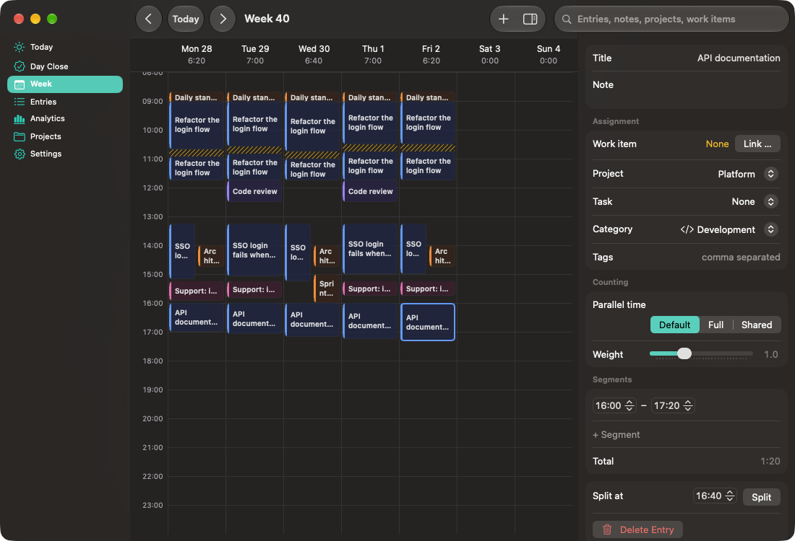
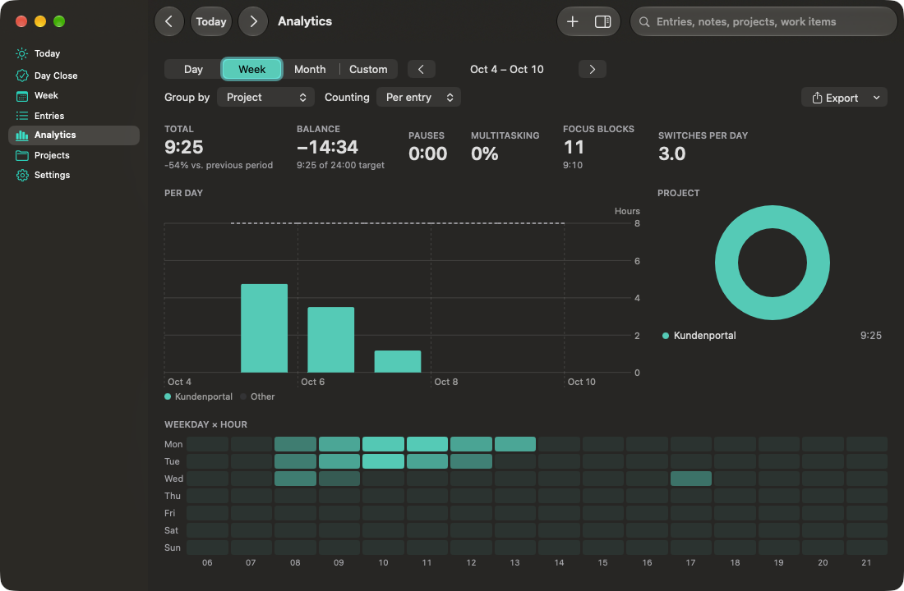

Start
Two seconds to a running timer.
Press ⌥⇧T, type two letters, hit Return.
Menu bar time tracker for macOS
Takt lives in your menu bar, keeps every byte on your Mac and books time straight into Azure DevOps.
What it does
Start
Press ⌥⇧T, type two letters, hit Return.
Honest time
Run timers side by side.
Analytics
Stacked days, projects, heatmap.
Azure DevOps
Takt writes Completed Work back as differences.
One day, three moments
Coffee in one hand.
A call pulls you away.
Close the day.
Swift 6, SwiftUI and AppKit.


brew install --cask nimble-123/tap/takt
macOS 26 or later · Apple Silicon
Pre-release builds are not notarized yet.
Rolling out to a team?